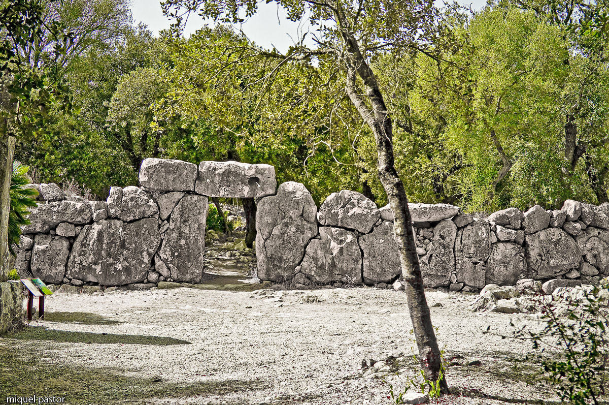
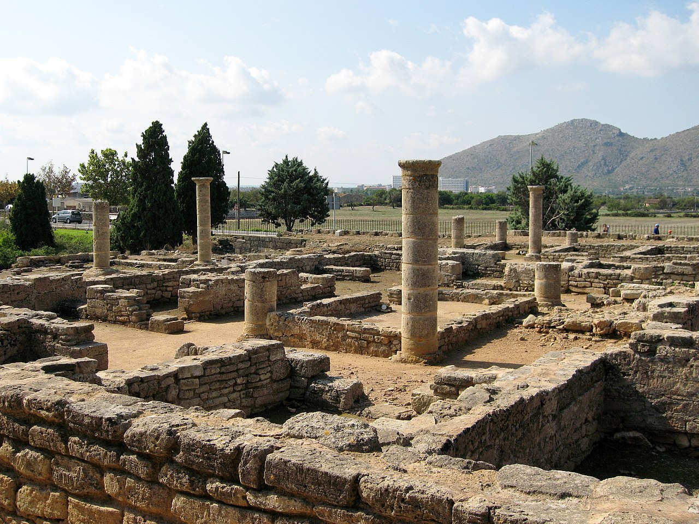
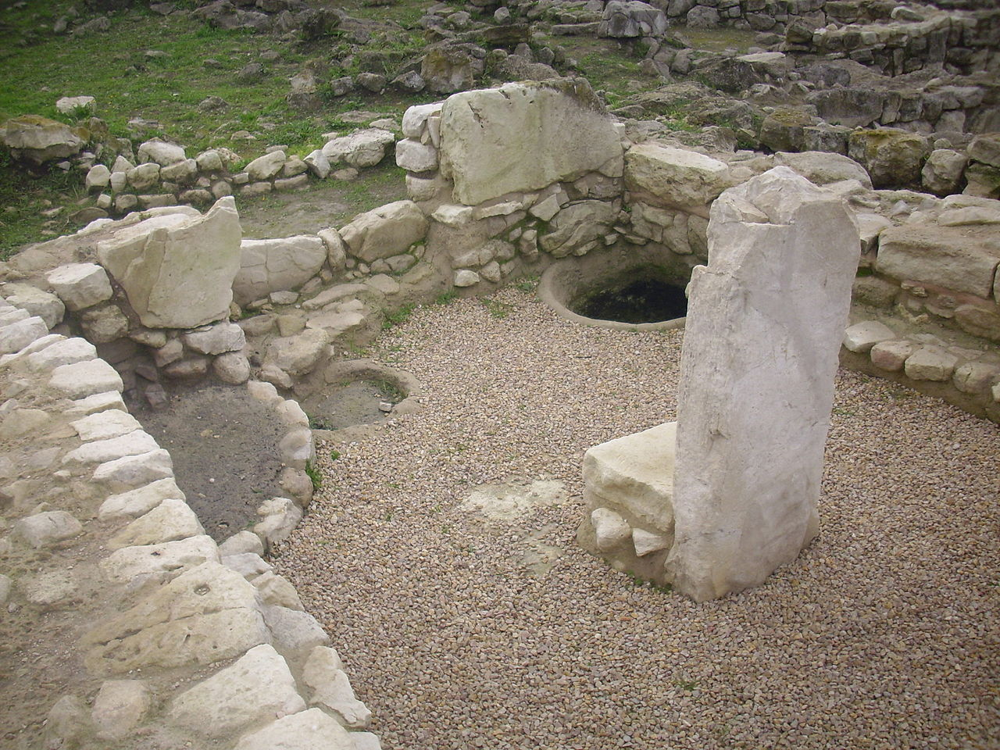
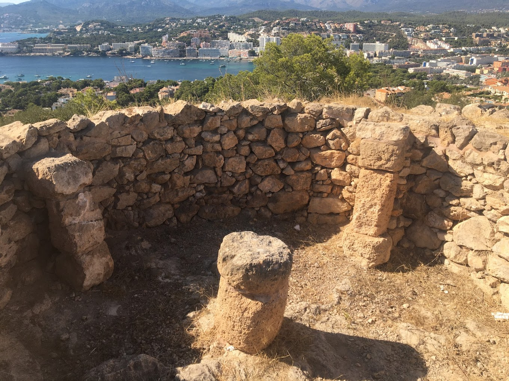
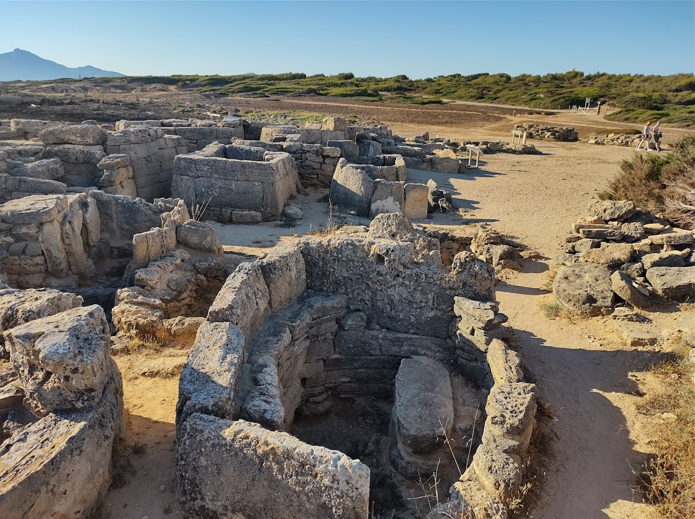
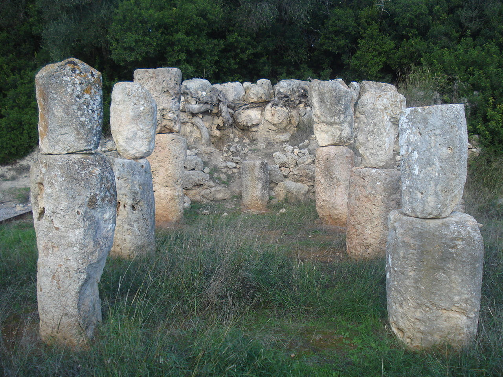

Yacimientos Arqueologicos de las Islas Baleares
Inicio
Mallorca
Menorca
Ibiza
Formentera
Quienes somos
Contactanos
Yacimientos de Mallorca
Por epocas
Por tipo
Por municipio
Yacimientos de Mallorca

Ses païses

Pollentia

Son fornes

Sa morisca

Son real
Naveta alemany

Son corro
Por epoca
Talaiotica
Romana
Post-talaiotica
Prehistorica
Ses païses
Sa morisca
Naveta alemany
Pollentia
Son real
Son fornes
Son corro
Por tipo
Poblado
Ciudad
Necropolis
Monumento
Santuario
Ses païses
Sa morisca
Naveta alemany
Pollentia
Son real
Son fornes
Son corro
Por municipio
Arta
Calvia
Alcudia
Montuiri
Santa Margarita
Costitx
Ses païses
Sa morisca
Naveta alemany
Pollentia
Son real
Son fornes
Son corro